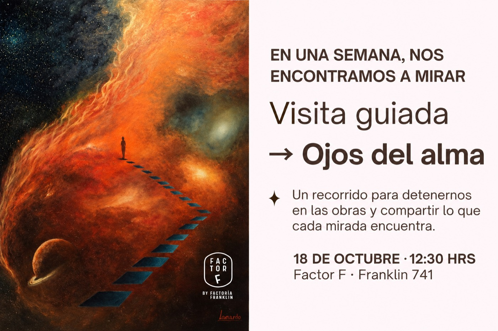

Expo Textil Factor F
Arte textil contemporáneo con más de 30 artistas chilenos.
La marca de arte dentro de Factoría Franklin: exposiciones de arte contemporáneo, oficio y experimentación. No siempre convoca sus propias muestras; muchas veces presta el espacio para que otras curatorías tengan dónde suceder.

Arte contemporáneo, oficio y experimentación, con muestras propias y curatorías invitadas.
Procesos creativos y nuevas materialidades: textil, cerámica, botánica y más.
Recorridos con guía por cada exposición, sin costo y en grupos reducidos.
8 artistas, 86 obras sobre la pregunta: ¿qué ocurre entre el diagnóstico y la sanación?
Ojos del Alma nace de una pregunta clínica de la Dra. Paola Andrea Dorta Salfate. La medicina enseña a mirar el ojo físico; este proyecto propone mirar los otros dos: el que siente y el que comprende.
Las obras no se seleccionaron por trayectoria ni técnica: se seleccionaron por su mensaje.

Una iniciativa de Puebla que celebra cinco años de trabajo territorial en Barrio Franklin, con objetos encontrados, baldosas y memoria de barrio.
Ver registroMuestra colectiva de 30 artistas seleccionados, con visita guiada.
Ver registroCerámica contemporánea: objeto, forma y gesto.
Ver registroArte textil contemporáneo con más de 30 artistas chilenos.
Déjanos tus datos y te avisamos cuando abra la próxima convocatoria de Factor F.
Te escribiremos cuando abra la próxima convocatoria de Factor F.
Exposiciones, procesos y comunidad en tiempo real.